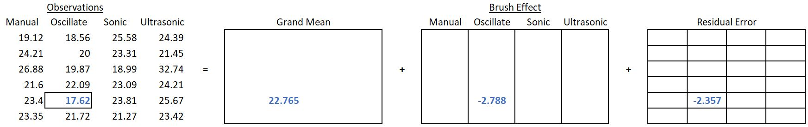
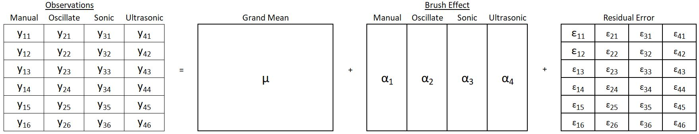

Effects Model
Consider an experiment conducted to test 4 different types of toothbrushes: manual, oscillating, sonic and ultrasonic. The response variable is percent of area on teeth that has plaque. Twenty-four individuals participate in the experiment, yielding 6 observations per treatment. Up to this point we have primarily been interested in calculating means in order to compare toothbrushes. If I simply reported that the mean of percent area with plaque was 23.09 for a manual brush, you would not know how that value compares to the other types of brushes.
A graph or table reporting the other means would be necessary to provide context. Figure 1 depicts the data points and mean for each factor level.

In an earlier, introductory statistics class you most likely learned how to test whether these means are equal using analysis of variance (ANOVA). This approach of testing means is valid and works when you only have 1 factor. However, it is limited in its ability to include more factors or more complicated designs.
There is another metric we use to compare factor levels: the effect size. Reporting the effect of a factor level has the benefit of providing some context on how that factor level is influencing the response variable relative to other levels of the same factor. Using effect sizes (as opposed to factor level means) allows us to model and test much more complicated scenarios than a simple one factor experiment..(Footnote with an explanation about cell means model??)
Calculating Effect Sizes
In the case of the toothbrush example, the effect of an ultrasonic toothbrush is calculated by subtracting the grand mean from the mean of ultrasonic brush observations. If the grand mean of the observations was 22.765 and the mean for ultrasonic was 25.313, we get
\[ \text{Effect}_\text{ultra} = \bar{y}_\text{ultra} - \bar{y}_\text{grand} = 25.313 - 22.765 = 2.548 \qquad(1)\]
Thus, use of an ultrasonic toothbrush increases the mean percent area with plaque by 2.548 relative to the grand mean. Therefore, I know the ultrasonic toothbrush’s effectiveness at removing plaque is below average.
In like manner, the effect size for the other factor levels is calculated
\[ \text{Effect}_\text{manual} = \bar{y}_\text{manual} - \bar{y}_\text{grand} = 23.093 - 22.765 = 0.328 \qquad(2)\] \[ \text{Effect}_\text{oscillating} = \bar{y}_\text{oscillating} - \bar{y}_\text{grand} = 19.977 - 22.765 = -2.788 \qquad(3)\] \[ \text{Effect}_\text{sonic} = \bar{y}_\text{sonic} - \bar{y}_\text{grand} = 22.675 - 22.765 = -0.09 \qquad(4)\]
Figure 2 shows a visual representation of effect size for oscillating and ultrasonic brushes:

The effect size of a factor level can be thought of as the difference between a factor-level’s mean and its partial fit. Or in other words, the difference between what you would predict for a given observation and what you would predict for that same observation without knowing which level of the factor it belongs to.
\[ \text{Effect Size} = \text{Factor level mean} - \text{sum of effects of all outside factors} \qquad(5)\]
Using Equation 5 we can also calculate the effect of the benchmark factor. Benchmark only has 1 level and it includes all the observations, so the factor level mean is the same as the grand mean, 22.765. The “sum of effects of all outside factors” is 0 since there are no factors outside of benchmark. Therefore, the effect size for benchmark is simply the grand mean. In this case, 22.765.
What about factor effects for various levels of residual error? We will show how this is done by working through an example for a specific observation. Let’s consider the observation with a value of 17.62 from the oscillating group. As a reminder, toothbrush type and benchmark are both outside of residual error (see Factor Structure).

There is only one observation in each box of the residual error factor. Therefore, the factor level mean for this observation is just the observation itself, 17.62. Next, to use the general rule we must find the effects of outside factors: toothbrush type and benchmark. The observation we are interested in belongs to the oscillating toothbrush group; we have already found the effect of the oscillating toothbrush to be -2.788. We discovered that the effect of benchmark is simply the grand mean, 22.765. Therefore, the residual error calculation is contained in Equation 6 :
\[ 17.62 - (22.765 + -2.788) = -2.357 \qquad(6)\]
This means that this individual’s plaque percent area was 2.357 lower than the average plaque percent area of those who used an oscillating brush. (Less plaque is a good thing!) Generally, we cannot tell exactly what caused the residual error. It could be a result of differences in how vigorously people brush, variations in the manufacture of the brushes, differences in how researchers assessed plaque from one person to another and an infinite number of other things. If the experiment implemented randomization properly and was designed and executed well, these residual error effects should behave randomly. In fact, they should behave like a normally distributed random variable…more on that later.
We will repeat the residual error1 calculation process for the outlying point in the “ultrasonic” level of toothbrush, which has a percent teeth area with plaque value of 32.74. The first step in applying the general rule is to find the factor level mean. In the residual error factor, each level only contains one observation, so the residual error factor level mean for this observation is just the observation itself, 32.74. The second second is to sum the effect of outside factors benchmark and toothbrush. Benchmark’s effect is simply the grand mean, 22.765. The effect of toothbrush in this case is 2.548 because the observation belongs to the “ultrasonic” group. The calculation of the residual error is therefore contained in Equation 7 :
1 You can think of an effect as a deviation from a mean. Other synonyms for deviation are error and variance. When you calculate an effect, you are also calculating a deviation or error. Thus, residual error effect is a bit redundant. Residual error and residual effect may be used interchangeably.
\[ 32.74 - (22.765 + 2.548) = 7.427 \qquad(7)\]
These two residual errors are depicted in Figure 4.

Hopefully you can see that if you have the effect for each of the factors in the factor structure diagram you can add them together to arrive at an individual observation. I really like the assembly line metaphor that George Cobb2 uses to explain this phenomenon.
2 Cobb, George. 2014. Introduction to Design and Analysis of Experiments. Wiley, 2014.
Assembly Line Metaphor
You can imagine that each data point in your data set is created by going down an assembly line, much like you would find in a factory that makes cars or appliances. All points start with the benchmark value. As it progresses through the assembly line the data point is altered to reflect the effect of the factor levels it belongs to.
In the toothbrush and toothpaste experiment all the points start the assembly line at the same value: the benchmark value, or the grand mean of the data set. The first station on the line receives the data point and adds to it because the instructions say “manual”. The next station alters the value depending what the instructions for that data point say: off-brand or name brand. After going through each station (one station for each factor) in the assembly line the data point arrives at the last station.
The last station is worked by a person who makes random adjustments! Some adjustments will be big, and some will be small; some will be positive, and some will be negative. (In a typical factory this person would be fired. But we would rather have randomness than unknown systematic adjustments). Though the adjustments at this last station for residual error are random, they do follow a pattern. Namely, the errors average out to zero and they follow a normal distribution.
A Formal Model and Notation
It is helpful to recognize that each factor influences, or has an effect on, the response variable. You can combine all these effects to “build” an observation. In our case though, the observation comes already built and we will need to break it back down into its component parts; almost like reverse engineering the data set to be able to explain why the data is the way that it is.
Taking it a step further, the variance in a set of observations can also be broken down into its component parts. This is called an analysis of variance (ANOVA). Before we get that far it will be helpful to create a formal, mathematical model to describe how these factor effects combine to arrive at a single observation.
In the effects section we learned how to estimate the effect size for any factor’s level in a model. We started with a very simple example where toothbrush type’s effect on the percent of teeth area with plaque was studied. In this example we identified a total of 3 factors: 2 universal factors (benchmark and residual error); and 1 structural factor (toothbrush type).
The fifth observation in the oscillating brush group had a value of 17.62 for percent area with plaqu. Using the general rule (Equation 5) we found that this observation was composed of the following effects:
\[ \text{Effect}_\text{benchmark} = 22.765 \] \[ \text{Effect}_\text{oscillating} = -2.788 \] \[ \text{Effect}_\text{residual} = -2.357 \]
We can represent this observation as the sum of its factor level effects.
\[ 17.62 = 22.765 + (-2.788) + (-2.357) \qquad(8)\]
Figure 5 puts this in context of our factor structure diagram.

Figure 6 shows this same calculation for all the observations. (Effect sizes are rounded to two decimal places).
Notice that the sum of the effects across the treatment factor equal zero.
\[ 0.33 + -2.79 + -.09 + 2.55 = 0 \]
The sum of all the residual errors within a treatment factor level also equal zero. For example, for the manual brush,
\[ -3.97 + 1.12 + 3.79 + -1.49 + 0.31 + 0.26 = 0 \]
Because of the way effect size is calculated, this will always be the case, regardless of the number of levels or the number of replicates. This result will continue to hold even as we add more structural factors.
Also take notice of the pattern of repeating values within a factor level. These patterns can help us better understand degrees of freedom.
We can write a general form of the model as:
\[ observation = effect_\text{benchmark} + effect_\text{brush} + effect_\text{residual} \]
Rather than writing “effect” and “observation”, let’s introduce symbols to represent the effects and observations. We will use a different symbol for each factor effect, and we will use y to represent an observation.
- \(\mu\) is the effect for benchmark, or in other words the grand mean.
- \(\alpha_i\) is generally used to refer to the effect of the factor that is varied in the experiment; in our case the factor is brush. The subscript \(i\) indicates which level of the factor the effect is for: \(i=1\) is manual, \(i=2\) is oscillating, \(i=3\) is sonic, \(i=4\) is ultrasonic.
- \(\epsilon_\text{ij}\) is the residual for each observation. The residual term will have a matching subscript for each factor in the study (in this case \(i\)) to indicate which factor level the observation belongs to. Plus, another subscript to indicate the replicate number within that factor level (or in the case of multiple factors, it is the replicate number with that factor level combination).
- \(y_\text{ij}\) is an observation. Since each observation has a residual, \(y\) has matching subscription with epsilon (\(\epsilon\)) and will tell us exactly which replicate within a factor level is being referenced.
We can rewrite Equation 8 symbolically:
\[ y_\text{12} = \mu + \alpha_1 + \epsilon_\text{12} \]
Figure 7 shows how this new notation can be used to reference any and all parts of our factor structure.

\[ y_\text{ij} = \mu + \alpha_i + \epsilon_\text{ij} \qquad(9)\]
This is called an effects model (as opposed to a means model) because it shows how each observation is the sum of factor effects. This can be expanded to more complicated designs (e.g. adding toothpaste brand as a treatment) by adding a term to the model for each structural factor.
At this point you should begin to see how the factor structure diagram can help us put together a mathematical model. Each factor in the diagram corresponds to a different term in the mathematical model.
We represent the observations with lower case English letters because they are known values (we observed them!). Greek letters are used to represent unknown, population parameters. The data is used to estimate those parameters. To represent an estimate of the effect we will simply place a hat on the parameter: \(\hat{\mu}\), \(\hat{\alpha}\), and \(\hat{\epsilon}\). Commonly \(\hat{\epsilon}\) is also expressed as \(e\); we will use these interchangeably in this book. Other books may represent these quantities with different symbols.
You can also see that calculating means is a crucial part of calculating effect estimates. There is also notation to represent the mean of groups of observations. As you already know, a bar is added over \(y\) to represent a mean of observed values. You can use dots in the subscripts of \(\bar{y}\) to indicate which values you are averaging over.
For example, the mean of the observations in the first level of a treatment factor would be represented as \(\bar{y}_{1\cdot}\). The 1 in the subscript indicates the mean only includes values from the first level of the treatment factor, and the dot indicates all the replicates are included. You can think of the “.” as meaning “include all the values of the subscript”. In our toothbrush example, \(\bar{y}_{1\cdot}\) is our estimate of the mean percent area with plaque using a manual toothbrush.
\[ \bar{y}_{1\cdot} = \frac{19.12 + 24.21 + 26.88 + 21.6 + 23.4 + 23.35}{6} = 23.09 \qquad(10)\]
Similarly, \(\bar{y}_{\cdot\cdot}\) represents an estimate of the grand mean. The dot in the first position indicates we should include all levels of the treatment factor and the second dot indicates we should include all the replicates.